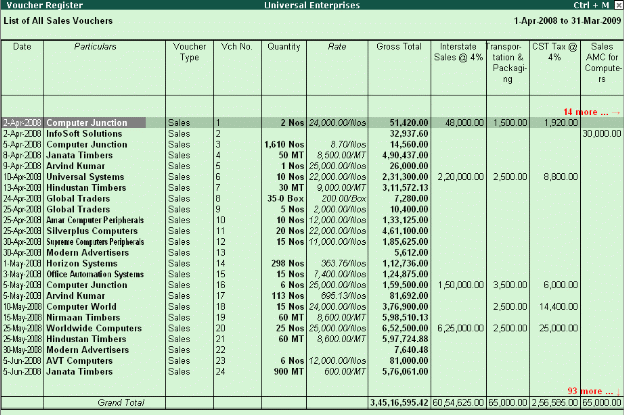

Columnar Reports
To view Columnar Reports, Tally.ERP 9 provides columnar reports for transactions of Sales, Purchase and Journal as well as specific Ledgers and Cash / Bank Books.
Go to Gateway of Tally > Display > Account Books
# Select a register (Sales/Purchase/Journal).
#Drill down to the List of Vouchers
# Press F5 to view columnar reports as shown in the figure below (This is an option to choose the ledger accounts or configure the columns to contain the required information)

Different type of reports can be generated for each of the primary statement/ report generated in Tally.ERP 9. It is to be noted that Tally.ERP 9 provides the columnar comparison of data for different periods and budgets only for the Group Summary.